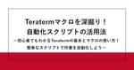
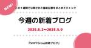
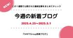
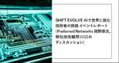
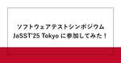

SHIFT Group 技術ブログ
https://note.shiftinc.jp
「無駄をなくしたスマートな社会の実現」を目指し、ソフトウェア製品の開発、運用、マーケティングなどあらゆる立場から携わるSHIFTグループの公式note。エンタメ・ゲーム業界から、Web系、金融／製造／小売りなどのエンタープライズ領域まで広い知見を活かした情報を発信しています。
フィード

Teratermマクロを深掘り！自動化スクリプトの活用法～初心者でもわかるTeratermの基本とマクロの使い方！簡単なスクリプトで作業を自動化しよう～
SHIFT Group 技術ブログ
はじめに続きをみる
15時間前
AI開発の大航海時代、QAたちはどう生きるか
SHIFT Group 技術ブログ
こんにちは。アジャイル推進グループの小谷です。今回はAI開発の進歩が凄まじい中、VibeコーディングとTDD（テスト駆動型開発）を軸に、QAとしてどう向き合っていくかについてを主題として進めていきます。（残念ながらジブリに関する話は出てきません。）続きをみる
1日前

今週の新着ブログ★6本公開！(2025.5.2~2025.5.9)_「AIで世界に挑む技術者の旅路」イベントレポート_売上高617億円と稼働率の維持を陰で支えた、アサイン管理ツール開発とは ほか
SHIFT Group 技術ブログ
こんにちは！「SHIFTグループ技術ブログ」編集部です。お役立ち記事を発信していますので、ぜひご注目ください！！本ブログは、IT技術だけでなくSHIFTグループのあらゆる知見やノウハウを広義の“技術”とし、入社歴や部署の垣根を超えて従業員が公式ブロガーとして記事を執筆しています。続きをみる
6日前
今さら聞けないLinuxコマンド！業務で役立つ頻出コマンドを徹底解説 ～初心者から中級者まで必見！業務効率を劇的に向上させるLinuxコマンドの使い方 ～
SHIFT Group 技術ブログ
はじめに続きをみる
6日前
【Node.js】OpenAPIの理解を深めるためにTodoアプリを構築する
SHIFT Group 技術ブログ
こんにちは。SHIFT アジャイル推進グループの hirata です。OpenAPI は、RESTful API を設計、記述、利用するための標準仕様です。本記事では、Node.js で OpenAPI を用いて API を設計し、その API を実装する方法を理解するために Todo アプリの構築を例に解説します。続きをみる
6日前

今週の新着ブログ★5本公開！(2025.4.25~2025.5.1)_その“仲間意識”が、可能性を閉ざす？_ChatGPT4oで作る４コマ学習教材 ほか
SHIFT Group 技術ブログ
こんにちは！「SHIFTグループ技術ブログ」編集部です。お役立ち記事を発信していますので、ぜひご注目ください！！本ブログは、IT技術だけでなくSHIFTグループのあらゆる知見やノウハウを広義の“技術”とし、入社歴や部署の垣根を超えて従業員が公式ブロガーとして記事を執筆しています。続きをみる
6日前

SHIFT EVOLVE「AIで世界に挑む技術者の旅路」イベントレポート（Preferred Networks 岡野原氏、弊社技術顧問 川口のディスカッション）
SHIFT Group 技術ブログ
CATチーム、テスト管理ツール「CAT」のエヴァンジェリスト石井です。CATの紹介はこちら（公式HP）からどうぞ。（情報）統合型ソフトウェアテスト管理ツール「CAT」について 現在SHIFTが提供するCATとは、テストの実行管理に主眼を置いた正式名称「CAT TCM（Test Cycle Management）」という製品を指します。ケースと実行結果・エビデンスの管理、及びプロジェクトの進捗管理や品質分析を担うツールです。詳しいご紹介はぜひ製品HPをご確認ください。続きをみる
7日前

ソフトウェアテストシンポジウム JaSST'25 Tokyo に参加してみた！ 1
1
SHIFT Group 技術ブログ
こんにちは、サビプラチームTD推進の三浦です。今回「JaSST'25 Tokyo」にTD推進／紹介要員として参加してきました。続きをみる
13日前
ChatGPT4oで作る４コマ学習教材
SHIFT Group 技術ブログ
こんにちは。 能力開発部で検定や教育制度を開発している林 稔明（りんりん）です！ SHIFTでは「AIネイティブなSIカンパニーを目指す」という目標を掲げています。続きをみる
14日前

今週の新着ブログ★16本公開！(2025.4.18~2025.4.24)_新卒検定とは？_難しく考えないVBA_SE小道具シリーズ ほか
SHIFT Group 技術ブログ
こんにちは！「SHIFTグループ技術ブログ」編集部です。お役立ち記事を発信していますので、ぜひご注目ください！！本ブログは、IT技術だけでなくSHIFTグループのあらゆる知見やノウハウを広義の“技術”とし、入社歴や部署の垣根を超えて従業員が公式ブロガーとして記事を執筆しています。続きをみる
20日前
Figma MCPからデザインを引いてきて、Clineに渡してフロントエンド実装をサボりたい
SHIFT Group 技術ブログ
こんにちは！SHIFTのKoshiishiです。これまでに、このような技術ブログを書いています。続きをみる
20日前